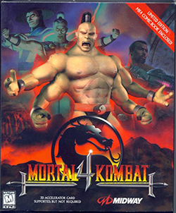

The Fourth
Mortal Kombat 4 (MK4) is the fourth main game in the Mortal Kombat series of fighting games developed by Midway Games. Released to arcades in 1997, Mortal Kombat 4 is the first title from the series to use 3D computer graphics as well as one of the first games that Midway made in 3D. Eurocom later ported it to the PlayStation, Nintendo 64, PC, and Game Boy Color during 1998. An updated version titled Mortal Kombat Gold was released a year later exclusively for the Dreamcast.
The gameplay from Mortal Kombat 4 is similar to that of the previous games; one of the most notable additions is the use of weapons and objects during fights. The storyline chronicles the attack from the corrupted god Shinnok against his former comrades who trapped him in the Netherealm various of years prior to the series' start: the other 17 playable characters take part in the battle between good and evil, with the forces of light trying to stop Shinnok and the forces of darkness attempting to conquer all the realms (Mortal Kombat Gold would expand the number of available characters).
Gameplay
Mortal Kombat 4 is played in a similar way to the previous titles from the series. However, MK4 introduces a limited weapon system, allowing each character to take out a special weapon using a set button combination. Once equipped, the weapons are primarily used through the punch buttons. This includes the swinging, clubbing or even tossing of the weapons. Furthermore, the weapons can also be purposely dropped, in similar fashion to the arena objects such as skulls and rocks; if an opponent's weapon is dropped, the other character is able to grasp it and use it. By sidestepping, the player is able to move in a 3D manner, shifting the camera angle, preventing both characters from holding up the weapons or objects they had on the ground.
MK4 added a "Maximum Damage" cap to the game's combo system, automatically breaking off combos if they deal over a set amount of damage to a player and, thus, preventing infinite combos (although this cap can be removed with a code). Unlike Mortal Kombat Trilogy which contained multiple finishing moves of various kinds, Mortal Kombat 4 only gives two Fatalities per character and two Stage Fatalities that can only be done in a certain arena and involve the character throwing the opponent to part of the arena where he or she can die. Unlike the first three games, this game doesn't include boss characters except Goro from the home versions.
Storyline
Thousands of years before the start of the series, Shinnok, one of the Elder Gods who control the six realms in the Mortal Kombat universe, attempted to become the conqueror of them all. Thunder God Raiden fought and defeated Shinnok in a war that spanned hundreds of years, sending him afterwards to the Netherealm, where he would be trapped forever. Now, Shinnok manages to escape from the Netherealm with help from the sorcerer Quan Chi, and seeks vengeance against the Elder Gods who banished him. In his plan, he first conquers the realm of Edenia, with the aid of a traitor, Tanya, while he prepares to attack the Elder Gods. In order to stop Shinnok's menace, Raiden requests the help from the Earthrealm warriors who managed to save the realms from Emperor Shao Kahn in previous titles.
"Thousands of years ago in a battle with the fallen elder god known as Shinnok, I was responsible for the death of an entire civilization. To rid all realms of Shinnok's menace I waged a war that plunged the earth into centuries of darkness and banished Shinnok to a place called the Netherrealm. Now after Shao Kahn's defeat at the hands of the earth warriors, Shinnok has managed to escape his confines of the Netherrealm. The war is now being fought once again, and this time it can be won by mortals." - The Words of Raiden
Characters


Secrets:
Secret menu
PlayStation: Start a 2 Player game and at the versus screen press these buttons to enter a kombat kode: (Player 1) Low Punch x3, Low Kick x2 - (Player 2) Low Punch x2, Block, Low Kick x3. After the match starts, pause and exit the to the main menu, select Options, highlight "Vs Screen Enabled" and hold Run + Block. Hold the buttons down until the Cheats menu appears.
PC: Go to the options menu and highlight Continue, Hold Low Kick + Block, the cheat menu will appear after you hear "Outstanding!".
Nintendo 64: Same as above, but holding the buttons Block + Run instead
Secret Characters:
Noob Saibot: Beat the game with Reiko. Then, at the character select screen, choose the "HIDE"(?) box, and then select Reiko while holding down Run+Block until the fight begins.
Goro: Beat the game with Shinnok. Then, at the character select screen, choose the "HIDE"(?) box, and then select Shinnok while holding down Run+Block until the fight begins.
Meat: To get to play as Meat, the bloody skeleton, you much select Group mode and win all the way through it. Once done, you then get to choose a character at the select screen. During gameplay, you will have a bloody skeleton with the moves of the character you chose. You continue to play with him until you lose.
General Info
Platforms
Arcade, PC, PlayStation, Nintendo 64, Game Boy Color.
Also available for X-Box 360 as part of X-Box Live Arcade, iPhone, Java Mobile.
Release Dates:
- Arcade: November 9th, 1997
- PC: July 31st, 1998
- PlayStation: 1998
- Nintendo 64: 1998
- Game Boy Color: February 28, 1999
Playable Kombatants:
(Hidden Kombatants not included)
Arcade, PC, PlayStation, Nintendo 64: 15: First 3 rows of the select screen
Game Boy Color: 8: Raiden, Quan Chi, Fujin, Liu Kang, Sub-Zero, Reiko, Tanya, Scorpion
Hidden Kombatants (Playable)
PlayStation, PC: 3: Meat, Noob Saibot, Goro
Nintendo 64: Same as above plus Kitana. (Unlockable using a Gameshark code)
Game Boy Color: Reptile
Arcade: Meat
Bosses:
Sub-Boss: Goro (except Arcade and Game Boy Color).
Boss: Shinnok.
Finishers:
Each character can perform 2 Fatalities and 2 Stage Fatalities.
Read full article on wikipedia